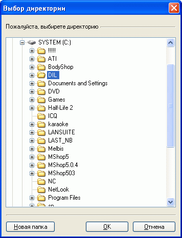

В случае, если исходные изображения, используемые для формирования иконок товаров, разделов, значений характеристик и др. располагались произвольным образом в разных директориях, удобно для упорядочивания базы данных собрать эти изображения вместе.
Для этого предназначена функция "Собрать исходные изображения вместе", вызов которой осуществляется из главного окна программы "Утилиты -- Автоформирователь изображений - Собрать исходные изображения вместе".
В появляющемся окне необходимо выбрать существующую папку, или указать имя новой. В результате выполнения данной функции все исходные изображения будут скопированы (не перемещены) в одну директорию. При этом на страницах магазина адреса исходных изображений, которые были заданы в формирователе изображений, будут откорректированы с учетом их нового места размещения.
После выполнения функции "Собрать исходные изображения вместе" удалять папку, в которую были собраны изображения, или ее содержимое нельзя!
